Touhou X Wiki - Selección de Personajes
Última modificación：13/01/2023
Esta página similar a una Wiki es un manual para los personajes del juego.
Personajes del Immaterial and Missing Power


Personajes del Scarlet Weather Rhapsody

Personajes del Hisoutensoku


Personajes del Hisoutensoku 2 Mod


Personajes Nuevos


Personajes Pendientes
 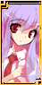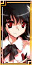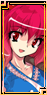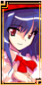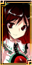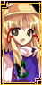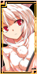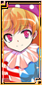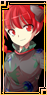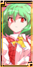
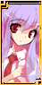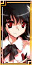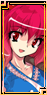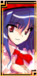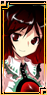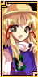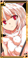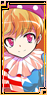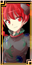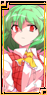 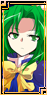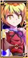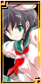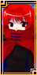
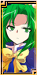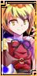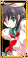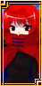